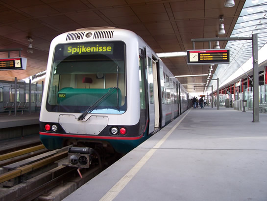
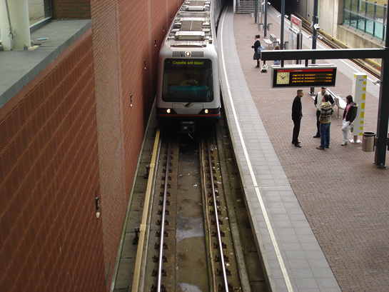
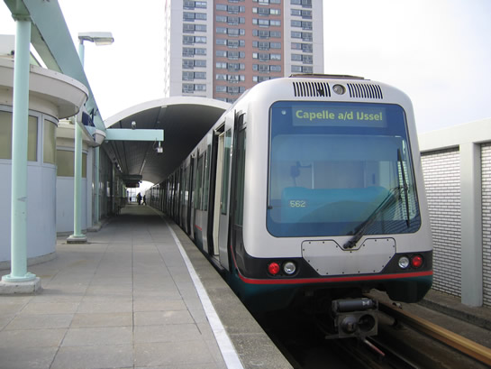
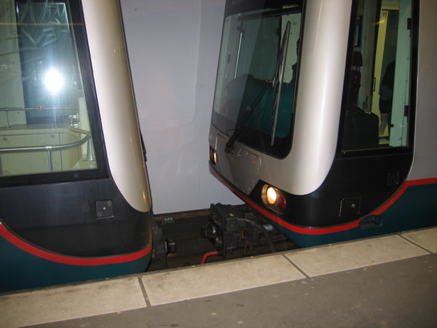
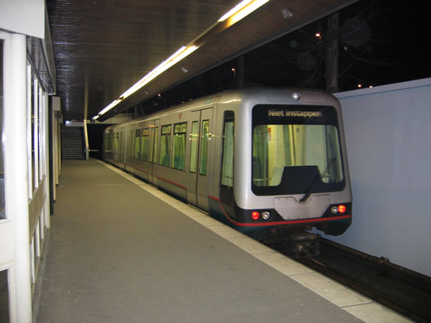
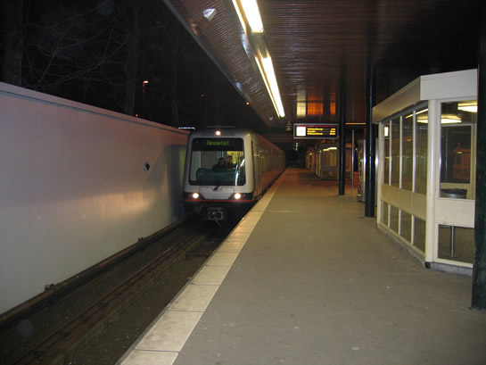
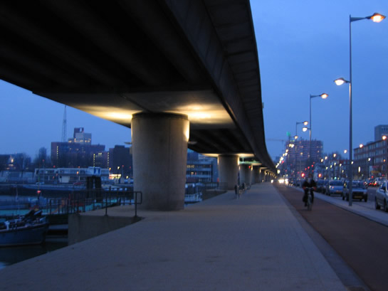

Serie 5300-rijtuigen op de Calandlijn en meer...
- vrijdag 05 december 2008 16:44
- Geschreven door Rodney
Door materieeltekort op de Calandlijn is het sinds eergisteren mogelijk een 5300 metrostel, welke normaal gesproken alleen op de Erasmuslijn rijdt, hele dagen te bekijken op ritten tussen station De Terp en De Akkers op de Calandlijn. Eerder deze maand was ook al een 5300-metrostel in dienst op de Calandlijn gespot, dat bleef toen echter bij één rit. Om naar De Terp, in Capelle a/d IJssel, te rijden is het niet noodzakelijk het sneltramtracé te berijden en kan men hier dus met een metro-voertuig rijden (serie 5300). Hieronder enkele foto's van de 5300 in dienst (mede met dank aan Jeff van Dipten en Jesse Zuidema).
 Voor meer informatie over de 5300: "Materieel-informatie"
Voor meer informatie over de 5300: "Materieel-informatie"

5300 rijtuig (type B) op Schiedam Centrum.

De 5310 aan kop met als analoge richtingfilm Capelle a/d IJssel op station Troelstralaan.

Nog een keer de 5310 aan kop op station De Akkers.
De dienst bestaat uit de metrorijtuigen 5357, 5347 en 5310. De 5357 werd donderdagavond rond 19:35 op station Kralingse Zoom afgekoppeld, waarna de overige 2 rijtuigen hun rit vervolgde naar Hoogvliet en het enkeltje waarschijnlijk later op Blaak gekeerd en terug gereden is naar remise ’s Gravenweg.

De 5347 koppelt zich los van de 5357.

De 5357 rijdt als enkele wagen de tunnel in.

De 5347 en de 5310 vervolgen hun rit naar Hoogvliet.
De 5300 rijtuigen zullen waarschijnlijk nog een tijd blijven rijden, in verband met materieeltekort op de Calandlijn.
Verlicht viaduct
Sinds 23 februari 18:30 uur zijn er lichten onder het viaduct tussen de stations Rijnhaven en Zuidplein voor het eerst aan gegaan. De lichten zijn naar boven gericht zodat het viaduct vanaf de onderkant verlicht is. De straatverlichting is voor de opening een paar minuten gedoofd zodat je de verlichting onder het viaduct goed kon zien.
